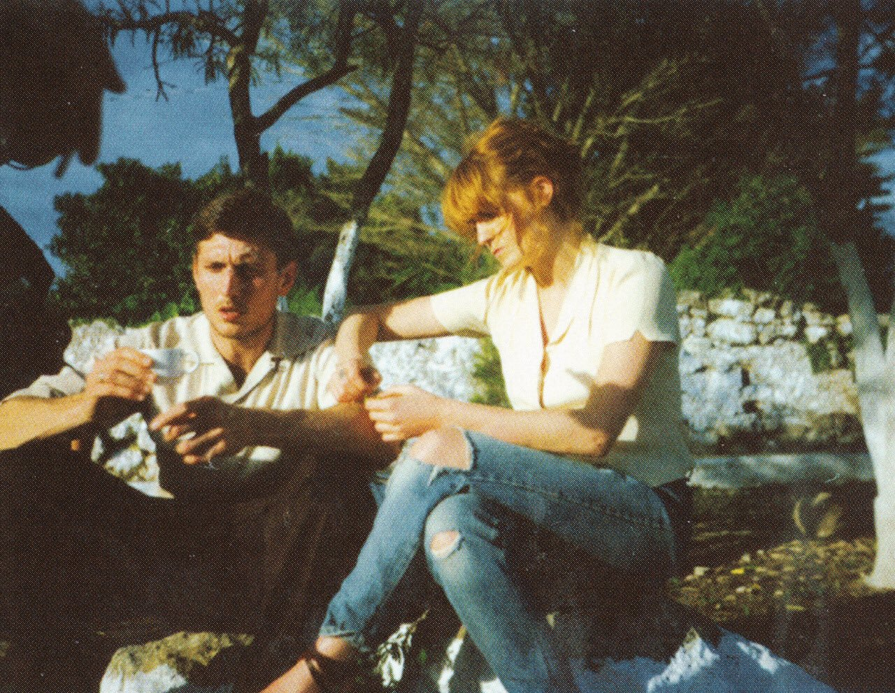
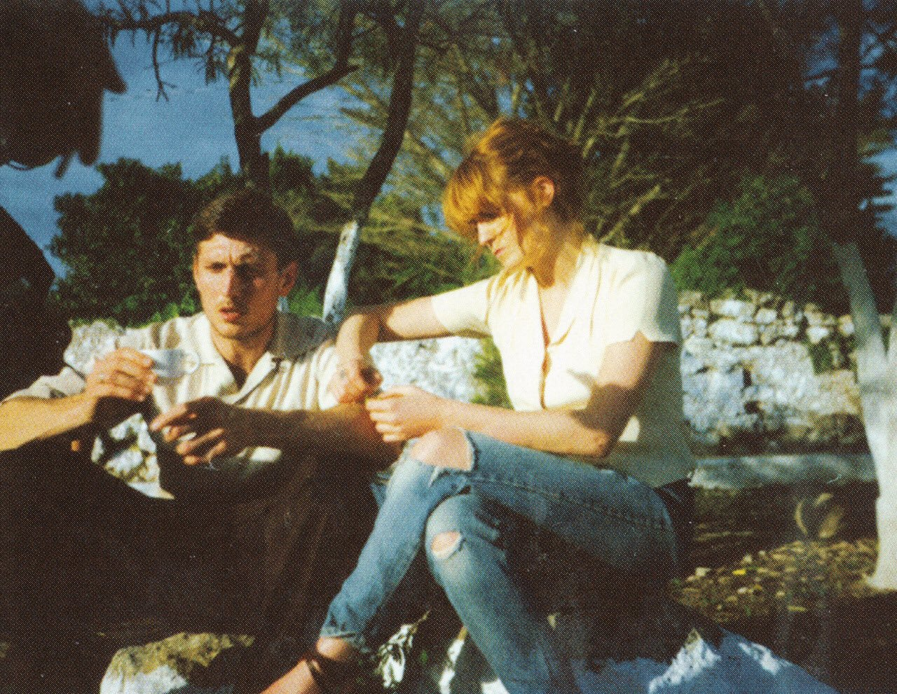

by Florence + The Machine



I was on a heavy tip
Tryna cross a canyon with a broken limb
You were on the other side
Like always, wondering what to do with life
I'd already had a sip
So I'd reasoned I was drunk enough to deal with it
You were on the other side
Like always, you could never make your mind
And with one kiss
You inspired a fire of devotion
That lasts for twenty years
What kind of man loves like this?
To let me dangle at a cruel angle
Oh my feet don't touch the floor
Sometimes you're half in and then you're half out
But you never close the door
What kind of man loves like this?
What kind of man?
What kind of man loves like this?
What kind of man?
You're a holy fool all colored blue
Red feet upon the floor
You do such damage, how do you manage
To have me crawling back for more?
And with one kiss
And with one kiss
You inspired a fire of devotion
That lasts for twenty years
For twenty years
What kind of man loves like this?
What kind of man loves like this?
What kind of man?
What kind of man loves like this?
What kind of man?
But I can't beat you
Cause I'm still with you
"Oh mercy", I implore
"Oh mercy", I implore
How do you do it? I think I'm through it
Then I'm back against the wall
Back, back, back against the wall
What kind of man loves like this?
What kind of man?
What kind of man loves like this?
What kind of man?
What kind of man loves like this?
What kind of man?
What kind of man loves like this?
What kind of man?
"Delilah"
by Florence + The Machine
I'm drifting through the halls with the sunrise
(Holding on for your call)
Climbing up the walls for that flashing light
(I can never let go)
[Refrain:]
Cause I'm gonna be free and I'm gonna be fine
(Holding on for your call)
Cause I'm gonna be free and I'm gonna be fine
(Maybe not tonight)
Now the sun is up and I'm going blind
(Holding on for your call)
Another drink just to pass the time
(I can never say no)
[Refrain]
[Pre-Chorus:]
It's a different kind of danger
And the bells are ringing out
And I'm calling for my mother
As I pull the pillars down
It's a different kind of danger
And my feet are spinning around
Never knew I was a dancer
'Till Delilah showed me how
Too fast for freedom
Sometimes it all falls down
These chains never leave me
I keep dragging them around
[Chorus:]
Now I'm dancing with Delilah and her vision is mine
(Holding on for your call)
A different kind of danger in the daylight
(I can never let go)
Took anything to cut you, I can find
(Holding on for your call)
A different kind of a danger in the daylight
(Can't you let me know?)
Now it's one more boy and it's one more lie
(Holding on for your call)
Taking the pills just to pass the time
(I can never say no)
[Refrain]
[Pre-Chorus]
[Chorus]
Strung up, strung out for your love
Hang in, hung up, it's so rough
I'm wrung and ringing out
Why can't you let me know?
[x2]
[Pre-Chorus x2]
Too fast for freedom
Sometimes it all falls down
These chains never leave me
I keep dragging them around
[x2]